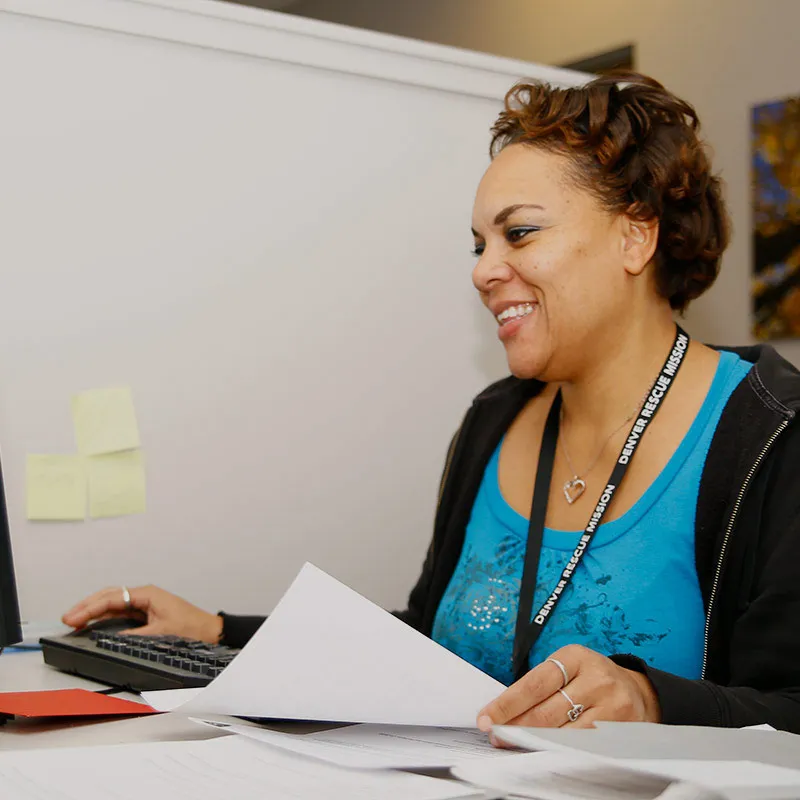
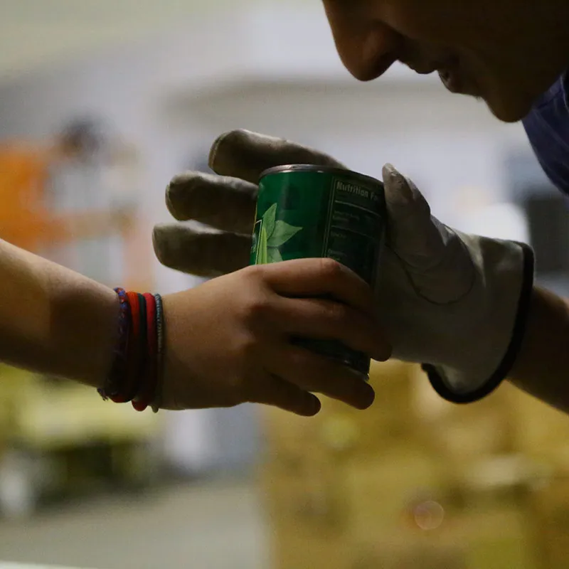
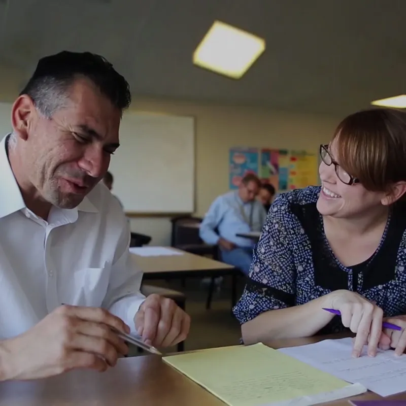

Volunteer
Learn More
Learn More
Thank you for your interest in volunteering at Denver Rescue Mission! Volunteers like you make all our programs and services possible, every single day. Meal service, mentoring a program participant or youth, helping sort donations, and more are all amazing things you can do volunteering at the Mission.
Find an Opportunity

Administrative

Court-Ordered Community Service

Education & Life Skills
How Does Your Group Want to Serve?
Have a large group, or looking for other ways to serve? Contact us to learn more.
Learn More
Volunteering Has Its Perks…
Search for your employer below to find out if they offer any volunteer benefits. Some employers may even offer paid time off in exchange for volunteering in your community!
Don’t see your employer listed? Talk to them about what a volunteer or matching gift program could look like.
Volunteer With a Group
Groups of 2 to 10 people can volunteer for a variety of opportunities, but our greatest need for groups is in serving meals and assisting with warehouse support at our Ministry Outreach Center. Thank you for joining us to change lives together.
Sign Up Your GroupYou Can Be a Change Maker
Change Makers are volunteers who want to partner with us by investing deeper in the lives of those experiencing homelessness and poverty.
Become a Change MakerFrequently Asked Questions
What type of volunteer opportunities are available for individuals?
We have three main types of volunteer opportunities:
- Short-Term: Serving meals, warehouse support, court-ordered community service, and more.
- Change Makers: Volunteers who serve on a regular basis working with adults or youth, teaching job skills, providing spiritual services, and more.
- Internships Fall, spring, and summer start dates are available.
Use the categories above to find an opportunity you’re interested in.
What volunteer opportunities are available for groups?
Group opportunities for 2-10 people are available for meals, and groups of 2-5 are welcome to serve through warehouse support opportunities. Select the Groups category above to find an opportunity that’s right for you.
Are there age restrictions for meal service volunteer opportunities?
Age requirements for meal service volunteers varies depending on the facility where you are volunteering. All volunteers under the age of 18 must be accompanied by someone who is 18 or older (parent/guardian, family member, youth pastor, etc.).
- At The Crossing, the minimum age for meal service volunteers is 12 years old.
- At the Lawrence Street Community Center, the minimum age for meal service volunteers is 14 years old
- At 48th Avenue Center, the minimum age for meal service volunteers is 14 years old
- At the Ministry Outreach Center, the minimum age for volunteering is 16 years old.
- At Fort Collins Rescue Mission, the minimum age for meal service volunteers is 16 years old.
Please do not bring family members or guests with you who are under the minimum age requirements for the facility where you will be serving.
Who do I contact if I have questions about volunteering?
If you have questions please contact us online.
If you have a question about an opportunity or scheduling, please contact our Volunteer Services team at 303.953.3955 or the contact person associated with the volunteer position.
How far in advance can I sign up for a meal service volunteer opportunity?
You may sign up for meal service 45 days in advance. Select Meals above to get started.
Can I complete court-ordered community service at Denver Rescue Mission?
Court-ordered community service can be completed through select volunteer opportunities at the Mission. All court ordered volunteers must apply and be approved before beginning service. Please select Court-Ordered Community Service from the categories above to see available opportunities. If there is not an application available that means that the opportunity is full at that time.
Can I bring my Emotional Support Animal or Service Animal to volunteer?
Emotional Support Animals are not permitted while volunteering at Denver Rescue Mission. Service Animals are permitted. Volunteers who wish to bring their Service Animal should contact Volunteer Services at Volunteer@DenRescue.org at least one week prior to their scheduled volunteer date to complete the necessary documents. No animals should ever be left unattended in vehicles during a volunteer shift.
What if my volunteer shift search does not give me results?
If you are unable find a volunteer shift based off your search criteria it is possible we don’t have any available shifts that match your desired location or date. Once a shift is filled, it will no longer appear on the website. Shifts are typically released 45-60 days in advance. Please reach out to us at 303.953.3955 if you need assistance with scheduling a shift.